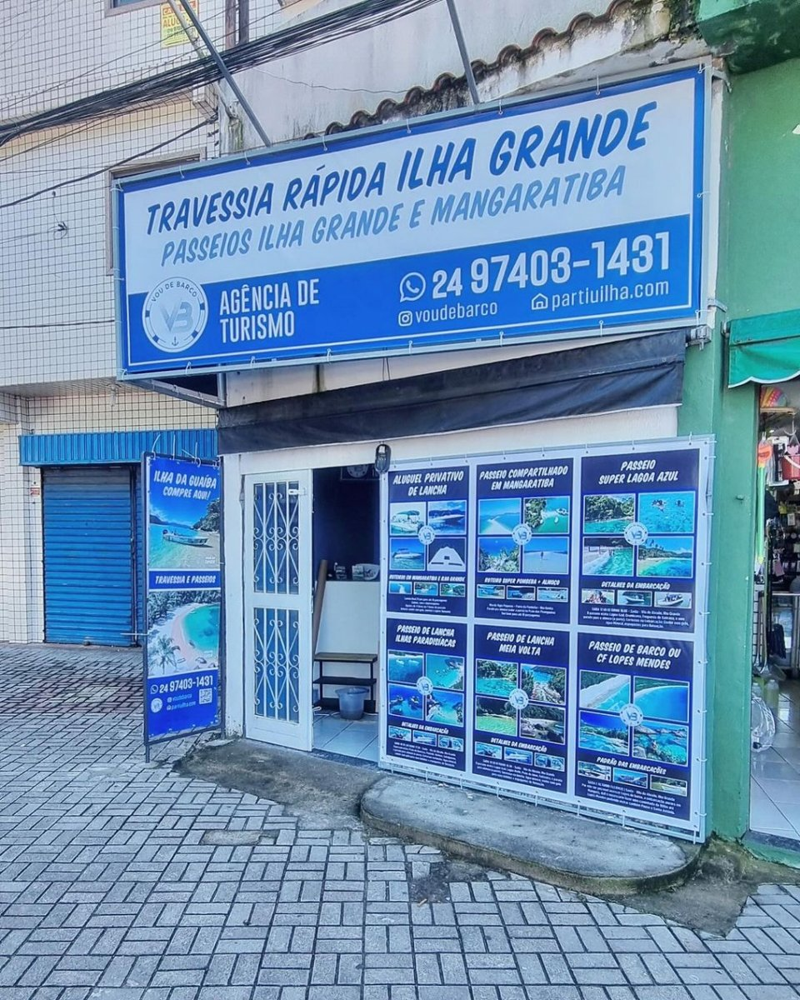

Gente de verdade, do cais até o seu destino
Operação náutica com frota própria, pioneira na travessia de Flex Boat por Mangaratiba.
Nascemos para resolver um problema real
A Vou de Barco é uma operação náutica com frota e tripulação próprias, dedicada a levar você até a Ilha Grande e a mostrar o melhor da Costa Verde no mar. Nascemos para resolver um problema real: chegar à ilha de forma mais rápida e confortável para quem vem do Rio de Janeiro.
Mangaratiba é o ponto mais próximo da capital, mas ninguém fazia a travessia de Flex Boat por ali. Encaramos o desafio com marinheiros experientes e embarcação preparada, e nos tornamos pioneiros nessa rota, hoje consolidada e referência na região.
Temos agência de turismo física no Centro de Mangaratiba e operação regularizada, com cadastro no CADASTUR (Ministério do Turismo). Levamos segurança a sério: embarcações revisadas, motor em dia e coletes para todos a bordo.

Pioneiros no Flex Boat por Mangaratiba
Frota própria e revisada
Marinheiros experientes e atendimento acolhedor
Agência regularizada · CADASTUR
O que a gente faz
Fazemos a travessia de Mangaratiba para a Ilha Grande em Flex Boat, em cerca de 40 minutos, e passeios de barco pelos cenários mais bonitos da Costa Verde — Lagoa Azul, Lagoa Verde, Praia dos Meros, Aventureiro, a Gruta do Acaiá e as ilhas paradisíacas de Angra. Veja também Mangaratiba, a porta de entrada da ilha, e como chegar.
Perguntas frequentes
A Vou de Barco é uma empresa regularizada?
Sim. Somos uma agência de turismo com agência física no Centro de Mangaratiba e cadastro no CADASTUR, do Ministério do Turismo. Trabalhamos com frota própria, embarcações revisadas e coletes para todos a bordo.
Onde fica a agência da Vou de Barco?
No Centro de Mangaratiba, no cais da barca — Av. Célio Lopes, 89. Também atendemos na Vila do Abraão, na Ilha Grande.
A frota é própria?
Sim, a Vou de Barco opera com frota e tripulação próprias, com marinheiros experientes que conhecem a região. Segurança e manutenção em dia são prioridade.
Como faço para reservar?
Todo o atendimento é pelo WhatsApp: você conta o seu plano (travessia e/ou passeios, data e número de pessoas) e a gente passa disponibilidade e valores, sem compromisso.